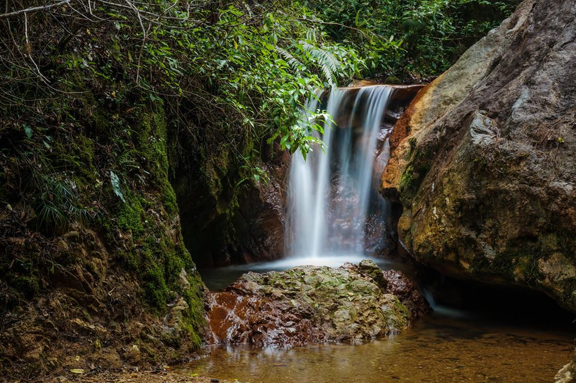
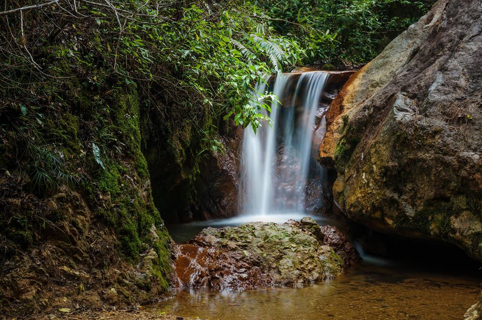
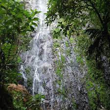
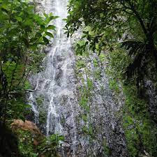

Parque nacional la tigra
¿Donde se encuentra ubicado el parque nacional la tigra ?
El Parque Nacional La Tigra : fue el primer parque nacional en Honduras,Su principal objetivo es "la conservación, preservación ecológica y el mantenimiento del potencial hidrológico y territorial de esta reserva natural"La Tigra es un bosque nublado con una superficie de 328 kilómetros cuadrados (127 millas cuadradas). Tiene una altitud de entre 1800 y 2185 metros. Está ubicado a 25 km (16 millas) de Tegucigalpa, y con a mayor extensión territorial... Además de su exuberante belleza natural y con un pasado histórico importante, la montaña de La Tigra, con su inmensa vegetación de bosque tropical nuboso también proporciona más del 30% de las necesidades de la ciudad capital, Tegucigalpa, y el 100 % de las comunidades aledañas ha sido protegido desde los años 1920, prueba de ello son los vertederos hidráulico de Jutiapa.
 

 
